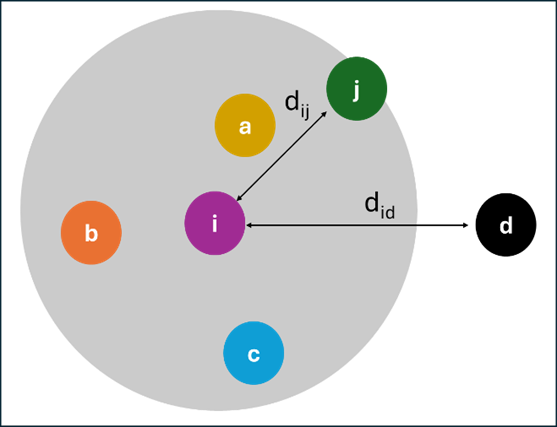
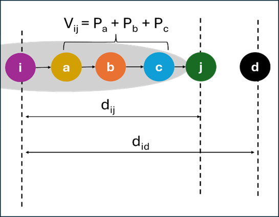
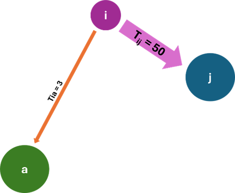

1 Introduction
1.1 Importance of Public Transport in Singapore
In 2023, Singapore’s total population was at 5.9 million and it was projected to grow steadily to about 6.9 million by 2030 (Centre for Liveable Cities, Singapore & Urban Land Institute, 2016). With a growing population, there is fierce competition for land in land-scarce Singapore. Currently, the transport infrastructure has already taken up 12% of Singapore’s land space, which is almost the same amount as the land space allocated for housing (14%) (Centre for Liveable Cities, Singapore & Urban Land Institute, 2016). In the long term, it is not feasible nor sustainable to allocate more land for roads and parking lots in land-scarce Singapore. With these considerations, Singapore has been advocating ‘car-lite’ policies and building an efficient, reliable and accessible public transport system since 1960s. As a result, in 2020, close to 60% of the employed residents in Singapore took combinations of bus, Mass Rapid Transit (MRT) or Light Rail Transit (LRT) to work (Kok, 2021).
With a large proportion of the population relying on the public transportation system, and along with the government’s ‘car-lite’ policies, it is essential to ensure that the public transportation system can meet the demands of the growing population. To meet the increasing demands, transport planners and providers would need to be able to accurately predict the commuter flows to allocate the necessary resources. Failure to estimate the commuter flow accurately could lead to serious consequences because transportation infrastructure and resources are costly and take time to prepare. For example, underestimating demand for a bus service could lead to residents’ unhappiness and overcrowding of buses during peak periods. Overestimating demand for a bus service could lead to wastage of public resources as the bus would be empty most of the time.
1.2 Importance of Buses in Singapore Public Transport
In 2009, Singapore’s Land Transport Authority (LTA) undertook the role of the central bus network planner to enhance the hub-and-spoke system so that the bus and rail services work in partnership (Land Transport Authority, 2008). Since then, more buses services have been provided, and existing bus routes were improved. LTA also reduced the waiting time and crowding density by improving bus frequency (Land Transport Authority, 2013) ; (Land Transport Authority, 2019). To be able to achieve such outcomes, the ability to predict demand for buses at the different origin and destination bus stops across different times of the day is important. While the recent land transport master plan published in 2019 focused on further expansion of the rail network, we are of the view that planning for bus transit is still important. This is because new housing estates such as Tengah and upcoming Paya Lebar and Southern Waterfront housing estates are being built and these new residential estates would change the demand and supply of commuters and eventually alter the commuter flows at the origin and destination bus stops. In addition, when commuters’ travelling decisions change, more new bus routes would need to be added, and existing bus routes would need to change. Therefore, to anticipate such changes, the ability to predict demand at various origin and destination bus stops during different times of the day is important. With this in mind, we will be focusing on bus commuter flows for this study.
2 Problem Statement and Objectives
Despite the relevance and importance of bus transit to Singapore’s public transportation, the planning and predicting bus demand in Singapore can be done more proactively. Based on our observations and the land transport masterplans, it seemed that the current practice of predicting and planning for bus transit demand is reactive and usually done when there are new residential towns, new MRT lines or stations, or after receiving public feedback. There are also limited research on predicting Singapore bus commuter flows, and few studies had been done to compare the different methods used to predict Singapore bus commuter flows. In addition, past research studies tend to focus on the use of conventional non-spatial statistical learning and machine learning methods in building predictive models. On the other hand, empirical evidence shows that public bus transit demand is non-stationary spatially and is very much affected by the geographical factors at the demand and supply locations. In view of this, this capstone project aims to explore and compare the appropriateness of non-spatial and spatial statistical and machine learning methods to predict Singapore bus commuter flows.
Our proposed study can provide value in four-folds:
1. illustrate how different non-spatial and spatial approaches in statistical and machine learning methods could be applied to bus commuter flows in Singapore’s context,
2. shed light on the strengths and weaknesses of different methods to predict Singapore bus commuter flows, which would be insightful for planners when they want to apply these methods to predict Singapore bus commuter flows,
3. enrich the existing limited research on predicting bus commuter flows in Singapore, and,
4. contribute to the existing studies on incorporating spatial component when using statistical or machine learning methods to predict commuter flows.
3 Preliminary Literature Review
3.1 Theories Explaining Human Commuting Patterns
3.1.1 Intervening Opportunities Model
Stouffer (1940) proposed a conceptual framework that rather than distance, it is the number of intervening opportunities or the cumulative number of opportunities between the origin and destination that determines migration. In the Intervening Opportunities (IO) model proposed by (Stouffer, 1940), the number of persons going a given distance is directly proportional to the number of opportunities at that distance and inversely proportional to the number of intervening opportunities.
The traditional form of the IO model is usually given by Schneider’s version of Stouffer’s model, which states that the probability that a trip ends in a given location is equal to the probability that this location offers an acceptable opportunity times the probability that an acceptable opportunity in another location closer to the origin of the trips has not been chosen (Barbosa et al., 2018). The flow \(T_{ij}\) from the origin location \(i\) to the \(j\)-th location ranked by travel cost from \(i\) is given by the following equation:
\[ T_{ij} = O_i\frac{e^{-LV_{ij-1}}-e^{-LV_{ij}}}{1-e^{-LV_{in}}} \]
Where \(O_i\) is the total number of trips originating from \(i\) and the second term represents the probability that one of these trips ends in location \(j\). In the second term, the denominator is a normalisation factor to ensure that the probabilities sum to 1. \(V_{ij}\) is the cumulative number of opportunities up to the \(j\)-th location ranked by travel cost from the origin location \(i\) (and \(n\) is the total number of locations in the region considered). \(L\) is a constant probability of accepting an opportunities destination.
| (A) | (B) |
|  |  |
Figure 1(A) illustrates that the geographical extent of intervenining opportunities is based on the distance between origin \(i\) and destination \(j\). Figure 1(B) shows that the intervening opportunities \(V_{ij}\) is composed of the cumulative population of areas in the order of near they are to the origin (i.e. destination \(a\) is nearest to origin \(i\) , followed by \(b\) then \(c\) ).
The gravity and the IO models had been compared in various studies, showing that in general, both models performed comparably (Barbosa et al., 2018). Despite relatively good performances, the IO model was less popular, which is mainly due to the lack of research effort into the implementation and calibration of the model.
3.1.2 Gravity Model
As cited by Barbosa et al. (2018), Zipf (1946) proposed an equation to calculate mobility flows inspired by Newton’s law of gravitation and highlighted the importance of distance in human migration patterns where the magnitude \(T_{ij}\) of a migratory flow between two communities \(i\) and \(j\) can be approximated by the following equation:
\[ T_{ij} \propto \frac{P_iP_j}{r_{ij}} \]
Where \(P_i\) and \(P_i\) are the respective populations at locations \(i\) and \(j\) and \(r_{ij}\) is the distance between locations \(i\) and \(j\).
|  |
In the above figure, i is the origin, j and a are both possible destinations. In gravity model, if both destinations’ populations are the same, the population at i would have a higher tendency to move towards a destination that is nearer (i.e. destination j because it is shorter distance away from i).
The basic assumptions of the gravity model are that the number of trips leaving \(i\) is proportional to its population (\(P_i\)), and the attractivity of \(j\) is proportional to \(P_j\), and that there is a cost effect in terms of the distance travelled. This can be generalised into the following relationship:
\[ T_{ij} = Km_im_jf(r_{ij}) \]
Where \(K\) is a constant, the masses \(m_i\) and \(m_j\) related to the number of trips leaving \(i\) or the ones attracted by \(j\) , and \(f(r_{ij})\) is a decreasing function of distance.
The optimal form of the distance function \(f(r_{ij})\) may change based on the purpose of the trips, the spatial granularity of the locations, and the transportation model. The gravity model’s ability to estimate trip-flows, which in turn allows us to estimate traffic demand between two different locations as a function of their local properties led it to be a popular model in transport planning.
However, the gravity model simplifies travel flows and is unable to capture actual empirical observations (Barbosa et al., 2018). The gravity model also requires calibration of several free parameters, which make it sensitive to fluctuations or incompleteness in data (Barbosa et al., 2018). Some of the limitations in the gravity model can be addressed using certain constrained versions. For example, the number of people originating from location \(i\) (\(O_i\)) can be constrained, resulting it in a singly-constrained gravity model. When both the number of people originating from location \(i\) and the number of travellers arriving at destination \(j\) (\(D_j\)) are constrained, it gives rise to a doubly-constrained gravity model.
3.1.3 Radiation Model
Arising from the IO model, the radiation model assumes that the choice of a traveler’s destination consists of two steps: (1) each opportunity in every location is assigned a fitness represented by a number, \(z\), chosen from some distribution \(p(z)\), whose value represents the quality of the opportunity for the traveler, and (2) the traveler ranks all opportunities according to their distances from the origin location and chooses the closest opportunity with a fitness higher than the traveler’s fitness threshold, which is another random number extracted from the fitness distribution \(p(z)\) (Barbosa et al., 2018). As a result, the average number of travelers from location \(i\) to location \(j\), \(T_{ij}\), takes the form:
\[ T_{ij} = O_i \frac{1}{1- \frac{m_i}{M}} \frac{m_im_j}{(m_i +s_{ij})(m_i+m_j+s_{ij})} \]
The destination of the \(O_i\) trips originating in \(i\) is sampled from a distribution of probabilities that a trip originating in \(i\) ends in location \(j\). This probability depends on the number of opportunities at the origin \(m_i\), the number of opportunities at the destination \(m_j\), and the number of opportunities \(s_{ij}\) in a circle of radius \(r_{ij}\) centered in \(i\) (excluding the source and destination). This conditional probability needs to be normalised so that the probability that a trip originating in the region of interest ends in this region is equal to 1. In case of a finite system, it is possible to show that this is equal to \(1 - \frac{m_i}{M}\) where \(M = \sum i m_i\) is the total number of opportunities. The advantage of the radiation model over gravity model is the absence of a parameter to calibrate with observed data. However, the absence of parameters also caused the model to be less robust to changes in the spatial scale. To overcome this, some studies proposed to extend the radiation model with opportunities’ selection.
For this project, we are interested in the calibration of gravity models. While gravity models simplify travel flows, there are more past studies done on gravity models as compared to the other models. In addition, Lenormand et al. (2016) compared the performance of the gravity model, radiation model and Schneider’s IO model and found that the gravity approach not only outperforms the other models when it comes to estimating the commuting flows but also best preserves the commuting network structure and the fit of the commuting distance distribution.
3.2 Methods for Calibrating Gravity Models
According to Openshaw (1975), as cited by Rowe et al. (2024), calibration is the process of providing estimates of the unknown parameters we have identified as the independent variables of the gravity model. For example, in a basic gravity model, we would need to estimate the origin mass, destination mass and a parameter determining the frictional effect of spatial separation between origins and destinations.
3.2.1 Statistical Methods
Regression is one of the commonly used statistical methods to calibrate gravity models (Oshan, 2022). To calibrate an unconstrained gravity model using regression, it can be transformed into a linear format by taking logarithms of both sides of the equation, which gives us the log-linear gravity model. This model can be expressed as a log-normal regression specification and included within an ordinary least-squares regression specification (Fotheringham & O’Kelly, 1989); (Oshan, 2022). Some studies also proposed to use Poisson regression for gravity models instead of ordinary least squares regression because flows are usually counts of people or objects, and hence should be modeled as discrete entities, and Poisson regression also avoids the potential issues of taking the logarithm of zero-valued flows (Oshan, 2022). Other statistical methods to calibrate gravity models include negative binomial distribution or zero-inflated extension to overcome the weaknesses of Poisson models, which are vulnerable to excessive zero flows and overdispersion. However, studies found that statistical methods are unable to account for nonlinearities and other irregularities in data, which could weaken the predictive ability of these models. Statistical methods assumed that origin-destination (OD) flows are normally distributed, but in reality, OD flows are usually not distributed normally and contain a large number of zero flows, resulting a sparse matrix, which make it incompatible with statistical methods such as ordinary least squares regression (Yeghikyan et al., 2020).
3.2.2 Machine Learning Based Methods
Increasingly, there are studies that make use of machine learning based methods to calibrate gravity models and found that these methods performed better than statistical models. Examples of machine learning methods include decision trees, random forests, Support Vector Machines, and neural networks. For example, Ding et al. (2016) improved the predictions for short term subway ridership by using Gradient Boosting decision trees to capture the associations with the independent variables. Their study found that gradient boosting approach can incorporate different types of predictors, fix complex nonlinear relationships, and handle the multicollinearity effect with high accuracy. Pourebrahim et al. (2019) found that with the integration of traditional and social media data, as compared to traditional gravity and artificial neural network models, the random forest model the highest \(R^2\) and lowest Mean Squared Error (MSE) when it comes to modelling trip distributions. Chen et al. (2011) made use of Least Squares Support Vector Machine (LS-SVM) to predict passenger flows for certain bus routes in Changchun and found that the predicted flow and actual flow had little difference and the majority of the equal coefficients of a training set are larger than 0.90, which shows the validity of the approach in using LS-SVM. Kusonkhum et al. (2022) found that as compared to random forests and decision tree, artificial neural network has a higher predictive accuracy when it comes to predicting metro passenger demand over time. Simini et al. (2021) proposed Deep Gravity, which is a model to generate flow probabilities that exploits various features extracted from voluntary geographic data (such as land use, transport facilities) and uses deep neural networks to discover non-linear relationships between those features and mobility flows. They found that as compared to classic gravity models, and models that do not use deep neural networks or geographic data, Deep Gravity performed better with good generalization capability and generated realistic flows.
3.2.3 Geographically Weighted Methods
While machine learning methods have relatively better performance in solving nonlinear problems, they assume that data points are independent and identically distributed, which are usually not valid for spatial data (Yang et al., 2023). These machine learning methods do not address spatial heterogeneity that these geospatial data possess. Studies have attempted to factor spatial heterogeneity in the machine learning models and found that those models that take in the spatial aspects gave better performance. For example, Georganos et al. (2021) found that geographical random forest outperformed a globally specified random forest with more accurate predictions. Another study by Yang et al. (2023) also found that when geographically weighted regression (GWR) was integrated with support vector machine, the resultant model was found to have better prediction accuracy than using GWR model, and support vector regression model separately. Hagenauer & Helbich (2022) proposed a geographically weighted artificial neural netwrok, which combines geographical weighting with an artificial neural network, and found that geographically weighted artificial neural network (GWANN) had better predictive performance than GWR when the relationships within the data are nonlinear and their spatial variance is high.
Outside of transportation studies on commuter flows, there are studies done using geographically weighted deep neural networks (GWDNN) to determine the down dead wood volume, which is crucial for sustaining forest management and predicting dynamic changes in forest resources and assessing the risks of natural disasters or disturbances. The study by Sun et al. (2021) found that GWDNN model was far more superior as compared to an ordinary least squares model, a linear mixed moodel, a GWR model and a deep neural network model. In another study by (Siqi et al., 2023), they used a hybrid technique by combining GWR and deep neural network to predict land surface temperature and found that this hybrid technique performed best in terms of model fitness and prediction error, as compared to ordinary least squares model, GWR, and deep neural network.
4 Research Design and Methods
4.1 Data
For this project, we will use data from LTA Datamall, Department of Statistics, Singapore, and Data.gov.sg.
Passenger Volume by Bus stops. First, to get the number of trips between origin and destination bus stops, we will make use of the “Passenger Volume by Bus stops” from LTA Datamall which provides information on the number of trips by weekdays and weekends from origin to destination bus stops. To download this dataset, we need to make use of LTA Datamall’s API and we can only request for files up to the last 3 months. This dataset has 7 fields: Year Month (e.g. 2024 – 06), Day type (i.e. Weekends/ Holiday, Weekday), Time per hour which ranges from 0 to 23, Public Transport Type which is bus, origin point code (i.e. bus stop number of the origin bus stop), destination point code (i.e., bus stop number of the destination bus stop) and total trips. As this dataset only has the bus stop number of the origin and destination bus stops and does not have the geographical information of the bus stops, we would need to join this data with (1) LTA Datamall’s “Bus Stop Location” dataset to find out the bus stops’ geographical information and (2) the subzone boundary data of URA Master Plan 2019 from data.gov.sg to find out the subzones that these bus stops are located in. To get the total number of commuter flows for morning peak hour on weekdays, we would extract commuter flows on weekday using the Day type field and between 6 and 9 in the morning using the Time per hour field, then aggregate these flows by the origin and destination bus stops using the origin point code and destination point code.
Population Data. To find out the number of people residing at the origins and destinations, we will use the “Singapore Residents by Planning Area/subzone, Single year of age and sex, Jun 2023” dataset from Singapore Department of Statistics. This dataset contains 6 fields: Planning Area (e.g. “Ang Mo Kio”), Subzone (e.g. “Ang Mo Kio Town Centre”), Age, Sex, Population, and Time (i.e. 2023, which is the year of the data being collected). As this dataset provides information on the number of Singapore residents staying at the various planning area and subzones, rather than the exact address, the Passenger Volume by Bus Stops needed to join with the subzone boundary data of URA Master Plan 2019 which contains the information on the planning area and subzone, to know the bus stops are in which planning area and subzone.
Office Location Data. As there are no public dataset on the number of offices in Singapore, we will use a ACRA’s information on corporate entities datasets to get an estimate of the number of offices located in Singapore. ACRA has split the corporate entities by the letter that they start with, there are 27 files containing corporate entities that start from letter ‘A’ to ‘Z’ and others. This dataset has 53 fields, and we are interested in the Postal Code field which can give us the geographical location of these corporate entities. To get the geographical location of these corporate entities, we will need to combine all the 27 files, then use the Postal Code in the dataset and OneMap’s API to get the point coordinates of all the corporate entities in Singapore.
4.2 Methods and R Packages
For this capstone project, we will gather, pre-process and wrangle the data collected from various open-source websites which includes LTA datamall, data.gov.sg and Singapore Department of Statistics. Thereafter, we will analyse the bus commuter flows on weekday morning peak hours from 6am to 9am and examine the key variables the affect commuter movements, such as population density, distribution of employment and transportation infrastructure. Next, we will develop and calibrate gravity models using (1) non-spatial statistical methods such as ordinary least squares regression, Poisson regression, negative binomial distribution, (2) spatial statistical methods such as geographical weighted regression, geographical weighted Poisson regression, geographical weighted negative binomial, (3) non-spatial machine learning methods such as decision trees, random forests, artificial neural networks, and (4) spatial machine learning methods such as geographically weighted random forests, geographically weighted artificial neural networks. Then we will use these calibrated models to predict the commuter flows, compare the predicted flows with actual flows, and evaluate the differences when non-spatial and spatial approaches are applied in statistical and machine learning methods.
For this project, the following R packages would be used:
Tidyerse: to import, integrate and manipulate non-spatial data.
sf: to import, integrate and process geospatial data.
tmap: to create elegant and cartographic quality thematic maps.
tidymodels: to build, fit, calibrate and evaluate machine learning models such as SVMs and neural networks.
spatialML: to implement a spatial extension of random forest.
spatialRF: for automatic generation and selection of spatial predictors for spatial regression with Random Forest.
gwann: to implement geographically weighted artificial neural network.
GWmodel: to explore spatial heterogeneity using geographically weighted models.
5 Schedule
For this capstone project, it would take approximately 16 weeks to complete from date of proposal approval, which is tentatively in September 2024. From June 2024 to August 2024, topic exploration, writing and reviewing of project proposal would take place. Between September 2024 and October 2024, we would be doing data cleaning and wrangling, building and tweaking the models and writing the progress report, which is due 12 weeks from the proposal approval date. From October 2024 to December 2024, the focus would be on finalising the models, and preparing the poster, presentation slides and final report. The details of the various milestones can be seen in Figure 3.
{kind=link}
6 Conclusions and Contributions
Through this project, it would allow us to compare the non-spatial and spatial approaches in statistical and machine learning methods to predict Singapore bus commuter flows using open-source data. In addition, this project will enrich the existing work on using geographically weighted machine learning methods to predict commuter flows since studies on geographically weighted machine learning methods are still developing. Hence, this project would not only allow us to better understand if geographically weighted machine learning methods can help us better predict commuter flows but also help Singapore transport planners and providers better understand Singapore bus commuters’ demand for buses.